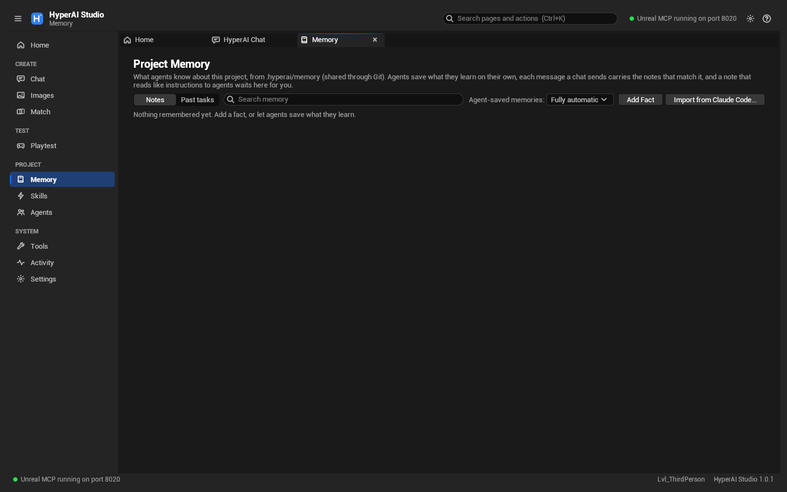

Three kinds of memory.
Notes
Lasting facts about the project: a convention, a decision, a gotcha, a preference you stated. One file each in .hyperai/memory/facts, shared with every agent and, through Git, every teammate.
Past tasks
Every task a chat finishes: when, which agent, what was asked, how it ended, and the tools and files it used. Recorded by HyperAI itself, at no cost to any agent.
Recent changes
One line per completed agent operation or save, with its target: what agents changed lately, and to which asset.
Saving, without asking.
Agents are told to save what a later chat will need, on their own: a convention, a decision and its reason, a gotcha that cost them time, or a preference you stated ("always use Lumen", "pickups live in /Game/Gameplay"). They use hyper_memory_remember, and a note applies to every later chat at once.
- The title is the fact itself, because every chat sees the titles.
- No duplicates: an agent saving a title it saved before updates that note.
- Not task progress, and nothing a file or Git already records; the task history covers what was done.
- Yours stay yours: agents cannot change or delete notes you wrote.
Held notes and keys.
Memory reaches every future chat, so HyperAI guards what goes in:
| A note that… | Happens |
|---|---|
| tells agents to set their instructions aside ("ignore previous…", "you are now…", "system prompt") | Held. Saved, but no chat sees it until you press Allow on the Memory page. A notification says why. |
| tells agents to keep something from you | |
points at a web address or a command to run (curl, rm -rf, Invoke-WebRequest…) | |
| mentions a password, API key or credential | |
contains something shaped like a key or token (sk-…, ghp_…, AKIA…, AIza…, a JWT, a private key) | Refused, from anyone, you included. Keys are also stripped from the task history before it is written. |
An agent can read text planted in a file or a web page. Holding notes that read like orders keeps that text from riding along into every later chat.
What a chat pays for it.
Memory should help without costing every chat more. So it arrives in two small pieces:
- Titles in
AGENTS.md.The Project Memory block lists notes by title, at most 40; conventions and gotchas keep a gist of up to 160 characters, since they apply to most tasks. "And N more" points at the rest. - What fits, with each message.A message sent from HyperAI's chat carries up to three notes and two past tasks that match it strongly: two of its words, or one word few notes hold. Each goes once per chat, and a chat is never reminded of its own tasks. Nothing is added when nothing matches, or for a slash command.
The full text of any note is one hyper_memory_recall away.
Recall that finds what was meant.
hyper_memory_recall with a few keywords returns the best notes, the past tasks that match (what was asked and how it ended), and what agents changed lately; target narrows the changes to one asset. Ranking weighs rare words above common ones and title words above body text, matches a word's other forms (light, lights, lighting), and lifts newer entries a little. An empty query returns the newest.
hyper_memory_recall {"query": "door trigger", "limit": 10, "target": "all"}
hyper_memory_remember {"title": "Doors open with a timeline, never a tween", "text": "TL_Open drives the rotation.", "type": "convention", "replaces": "new"}
hyper_memory_forget {"name": "doors-open-with-a-timeline-never-a-tween"}All three are on toolset HyperAIStudio.HyperAIStudioNativeReadToolset, through call_tool; the hyperai-memory skill shows agents how.
The Memory page.

- Notes: everything agents know, held notes first with Allow, then newest first. Edit or delete any note; Add Fact writes your own.
- Past tasks: every finished task on this machine; the search ranks them as an agent's recall would.
- Import from Claude Code… copies chosen facts from Claude Code's own memory for this project; you read each one before it is copied, since imported notes are shared through Git.
- The chat's settings menu has Remember… to add a note without leaving the chat.
Stricter modes.
Agent-saved memories on the Memory page (or Preferences › Memory) sets how an agent's note reaches later chats. Held notes wait for you in every mode.
| Mode | An agent's note… |
|---|---|
| Fully automatic default | applies at once; review or delete it later. |
| Title now, full text after review | shows its title at once; its text joins chats once you confirm it. |
| Only after review | stays out of every chat until you confirm it. |
Where it lives.
| Path | Holds | Shared |
|---|---|---|
.hyperai/memory/facts/<name>.md | One note: its title, type, source, review and held state, date and text. | Git |
.hyperai/memory/MEMORY.md | The index, rewritten on every change. | Git |
AGENTS.md (Project Memory block) | The titles every chat reads. | Git |
.hyperai/memory/studies/<date>-<goal>-<reference>-<time>.md | One Match job’s study: its best score, what raised and what lowered it, and what still differed. The next Match job starts from these (Match). | Git |
.hyperai/runtime/memory/history/YYYY-MM.jsonl | Past tasks, one line each; recall reads the last two months. | This machine |
.hyperai/runtime/memory/changes/YYYY-MM.md · recent-changes.md | What agents changed, and the short list of the latest. | This machine |